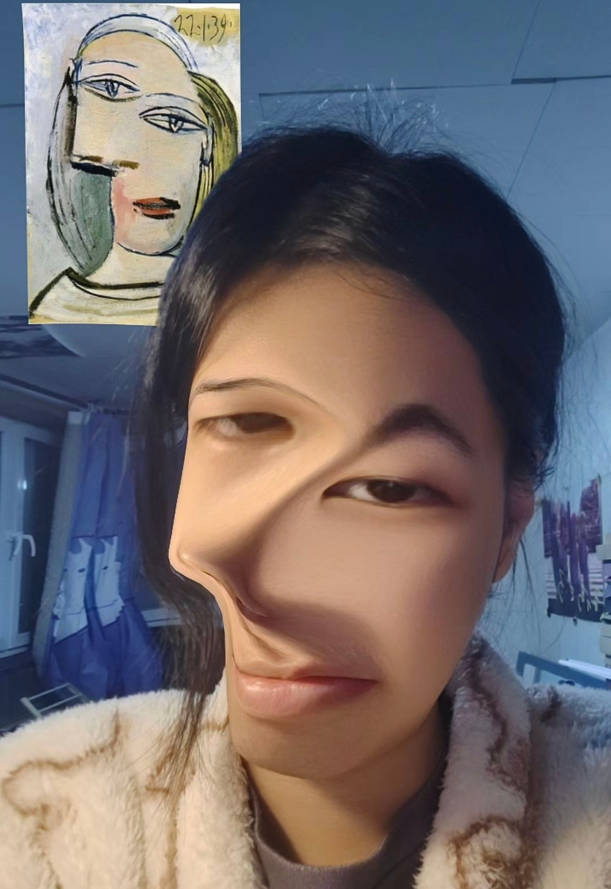

Who am I
I born in 02/06/2010, Beijing ChaoYang, China
Hello there, My name is Yangyang Meiqi, and perferred to be called as Ariel Yang. I'm now a year 10 student in Christchurch, Burnside High School. Optional subjescts are digital tech, visual art and food tech. In the future, I want to be a electrical engineering major student at university.
I like to eat foods, and I also like to make them. My Top 3 favourite flavours are chocolate, matcha, and black sesame.

I'm a mahoosive anime lover, so I love to watch animes and fanfics, also I do some cosplays, play videogames and novel-games.
My favourite anime is Evangelion, no doubt. My favourite song is "One Last Kiss" by Hikaru Utada in 2021, it's the ED of "EVANGELION:3.0+1.01 THRICE UPON A TIME", it can be seen that I'm so crazy about this anime. For me, it's like a god piece.
Although I love this anime so much, yet my favourite character is not from this anime, it's a character originated from "Fate" series, Altria Pendragon. She was a feme version of king Arthur.
Introduction
This is a website that I made for my year 10 Burnside digital tech subject, I will continue put more stuff inside this website to let you know about my investigation on ditigal tech, please look forward to it........
:)